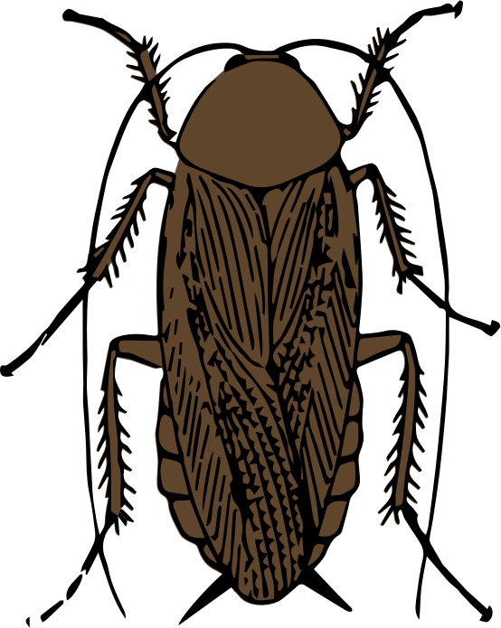
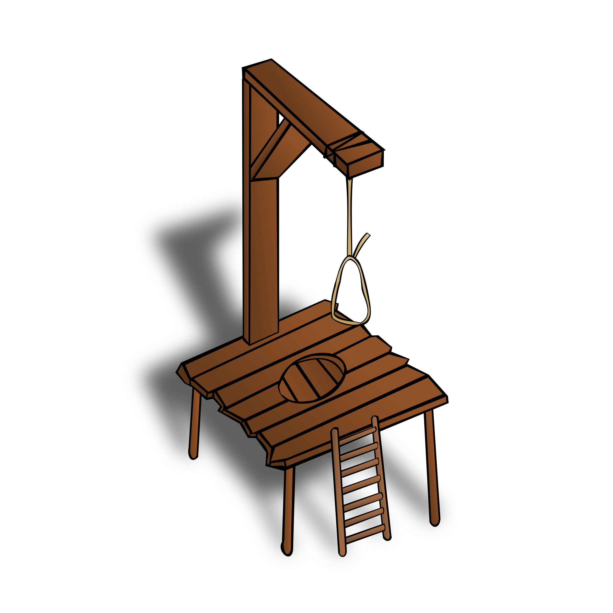

<head>
   <title>Sixty-Three Fires of Lung</title>
   <style>
      body{ background-color: rgb(0,9,12); color: #00b4ff }
      a{ color: #70b4ff; text-decoration: none }
      a:hover{ color: #f0ffff; text-decoration: overline underline }
   </style>


<body>

<div id="google_translate_element">
Page: <a href='63_Devlog_page1.html'>1</a> <a href='63_Devlog_page2.html'>2</a> <a href='63_Devlog_page3.html'>3</a> <a href='63_Devlog_page4.html'>4</a> <a href='63_Devlog_page5.html'>5</a> <a href='63_Devlog_page6.html'>6</a> <a href='63_Devlog_page7.html'>7</a> <a href='63_Devlog_page8.html'>8</a> <a href='63_Devlog_page9.html'>9</a> <a href='63_Devlog_page10.html'>10</a> <a href='63_Devlog_page11.html'>11</a> <big>12</big> <a href='63_Devlog_page13.html'>13</a> <a href='63_Devlog_page14.html'>14</a> <a href='63_Devlog_page15.html'>15</a> <a href='63_Devlog_page16.html'>16</a> <p><table width='100%'><caption>Live DevLog</caption>
<tr valign=top><td colspan=2><big>12 Jan 2018</big></td></tr>
<!-- entry #855 --><tr valign=top><td>00:54:08</td><td align=right style='color: rgb(1,179,251); background-color: #000000'>TEST</td><td style='color: rgb(1,179,251); background-color: rgb(1,16,12)'>Another test running</td></tr>
<!-- entry #854 --><tr valign=top><td>00:53:13</td><td align=right style='color: rgb(1,176,240); background-color: #000000'>DEBUG</td><td style='color: rgb(1,176,240); background-color: rgb(1,9,22)'>It's getting too late now to properly investigate it all... Coordinates do not fit the facts... But I think there's something wrong with the dominance map, I will put in one last thing to see if that is correct...</td></tr>
<!-- entry #853 --><tr valign=top><td>00:44:14</td><td align=right style='color: rgb(1,176,240); background-color: #000000'>DEBUG</td><td style='color: rgb(1,176,240); background-color: rgb(1,9,22)'>Let's see if there is a logical explanation for this....</td></tr>
<!-- entry #852 --><tr valign=top><td>00:39:45</td><td align=right style='color: rgb(1,175,245); background-color: #000000'>COCKROACH</td><td style='color: rgb(1,175,245); background-color: rgb(1,14,13)'>No more crashes. Ryanna just flickers over the screen on random spots and ultimately disappears</td></tr>
<!-- entry #851 --><tr valign=top><td>00:36:33</td><td align=right style='color: rgb(1,177,237); background-color: #000000'>CLEANUP</td><td style='color: rgb(1,177,237); background-color: rgb(1,16,19)'>A debug line in the Ryanna core libs deactivated. Is only annoying now</td></tr>
<!-- entry #850 --><tr valign=top><td>00:35:08</td><td align=right style='color: rgb(1,179,236); background-color: #000000'>FIXED</td><td style='color: rgb(1,179,236); background-color: rgb(1,12,18)'>Lua cannot really handle tables being changed during itteration. I've now solved this with a table copy... Not the most elegant solution, but it should at least prevent serious trouble....</td></tr>
<!-- entry #849 --><tr valign=top><td>00:27:46</td><td align=right style='color: rgb(1,176,240); background-color: #000000'>DEBUG</td><td style='color: rgb(1,176,240); background-color: rgb(1,9,22)'>let's throw this routine on it in order to see how this impossibility happens... :-/</td></tr>
<!-- entry #848 --><tr valign=top><td>00:23:30</td><td align=right style='color: rgb(1,170,249); background-color: #000000'>NOTE</td><td style='color: rgb(1,170,249); background-color: rgb(1,13,21)'>Now THIS is odd.... A "nil" from an itterator.... Normally Lua cannot generate nils in iteration routines, so I wonder what happened here...</td></tr>
<!-- entry #847 --><tr valign=top><td>00:18:42</td><td align=right style='color: rgb(1,177,246); background-color: #000000'>BUG</td><td style='color: rgb(1,177,246); background-color: rgb(1,14,19)'>Okay, now there is a bug in the dominance remapper.... That shouldn't be the hardest thing to fix, but ya never know...</td></tr>
<!-- entry #846 --><tr valign=top><td>00:11:59</td><td align=right style='color: rgb(1,179,236); background-color: #000000'>FIXED</td><td style='color: rgb(1,179,236); background-color: rgb(1,12,18)'>Aha... I think....</td></tr>
<!-- entry #845 --><tr valign=top><td>00:10:24</td><td align=right style='color: rgb(1,176,240); background-color: #000000'>DEBUG</td><td style='color: rgb(1,176,240); background-color: rgb(1,9,22)'>WTF?<pre>Error: [string "Libs/Lib_kthura.rel/Core.lua"]:88: No Grid mode for layer: 656<br>stack traceback:<br>	[C]: in function 'assert'<br>	[string "Libs/Lib_kthura.rel/Core.lua"]:88: in function 'block'<br>	[string "Libs/Lib_kthura.rel/Draw.lua"]:180: in function 'draw'<br>	[string "Libs/Lib_kthura.rel/Draw.lua"]:238: in function 'draw'<br>	[string "Libs/Lib_kthura.rel/Draw.lua"]:267: in function 'drawmap'<br>	[string "Script/Flows/field.rel/field.lua"]:141: in function 'odraw'<br>	[string "Libs/killcallback.rel/kcb.lua"]:69: in function 'draw'<br>	[string "boot.lua"]:468: in function <[string "boot.lua"]:436><br>	[C]: in function 'xpcall'<br></pre>Where does THAT layer come from?</td></tr>
<!-- entry #844 --><tr valign=top><td>00:08:38</td><td align=right style='color: rgb(1,177,240); background-color: #000000'>OFFTOPIC</td><td style='color: rgb(1,177,240); background-color: rgb(1,11,25)'>He's right<p>Debugging is twice as hard as writing the code in the first place. Therefore, if you write the code as cleverly as possible, you are, by definition, not smart enough to debug it.<br><br>-- Brian Kernighan</td></tr>
<!-- entry #843 --><tr valign=top><td>00:07:33</td><td align=right style='color: rgb(1,176,240); background-color: #000000'>DEBUG</td><td style='color: rgb(1,176,240); background-color: rgb(1,9,22)'>This should NOT be possible, so let's see what's wrong here</td></tr>
<!-- entry #842 --><tr valign=top><td>00:01:23</td><td align=right style='color: rgb(1,175,245); background-color: #000000'>COCKROACH</td><td style='color: rgb(1,175,245); background-color: rgb(1,14,13)'><pre>Error: main.lua:176: bad argument <a href='http://github.com/PhantasarProductions/63fires/issues/1'>#1</a> to 'gmatch' (string expected, got nil)<br>stack traceback:<br>	[C]: in function 'gmatch'<br>	main.lua:176: in function 'mysplit'<br>	[string "Libs/Lib_kthura.rel/Core.lua"]:88: in function 'block'<br>	[string "Libs/Lib_kthura.rel/Draw.lua"]:180: in function 'draw'<br>	[string "Libs/Lib_kthura.rel/Draw.lua"]:238: in function 'draw'<br>	[string "Libs/Lib_kthura.rel/Draw.lua"]:267: in function 'drawmap'<br>	[string "Script/Flows/field.rel/field.lua"]:141: in function 'odraw'<br>	[string "Libs/killcallback.rel/kcb.lua"]:69: in function 'draw'<br>	[string "boot.lua"]:468: in function <[string "boot.lua"]:436><br>	[C]: in function 'xpcall'<br></pre><p>This is annoying the CRAP out of me now</td></tr>
<tr valign=top><td colspan=2><big>11 Jan 2018</big></td></tr>
<!-- entry #841 --><tr valign=top><td>23:58:34</td><td align=right style='color: rgb(1,175,240); background-color: #000000'>STATUS</td><td style='color: rgb(1,175,240); background-color: rgb(1,11,12)'>Cockroach killed now?</td></tr>
<!-- entry #840 --><tr valign=top><td>23:58:15</td><td align=right style='color: rgb(1,179,236); background-color: #000000'>FIXED</td><td style='color: rgb(1,179,236); background-color: rgb(1,12,18)'>Code Typo</td></tr>
<!-- entry #839 --><tr valign=top><td>23:55:56</td><td align=right style='color: rgb(1,177,248); background-color: #000000'>SCENARIO</td><td style='color: rgb(1,177,248); background-color: rgb(1,9,25)'>In the meantime I've set three more grave texts</td></tr>
<!-- entry #838 --><tr valign=top><td>23:53:53</td><td align=right style='color: rgb(1,170,249); background-color: #000000'>NOTE</td><td style='color: rgb(1,170,249); background-color: rgb(1,13,21)'>Although I don't know how much more there's to fix</td></tr>
<!-- entry #837 --><tr valign=top><td>23:53:41</td><td align=right style='color: rgb(1,179,236); background-color: #000000'>FIXED</td><td style='color: rgb(1,179,236); background-color: rgb(1,12,18)'>Another fix</td></tr>
<!-- entry #836 --><tr valign=top><td>23:52:57</td><td align=right style='color: rgb(1,175,245); background-color: #000000'>COCKROACH</td><td style='color: rgb(1,175,245); background-color: rgb(1,14,13)'>It's really annoying now.... I don't remember this went so hard when I set up the first Kthura path finding routines :-/</td></tr>
<!-- entry #835 --><tr valign=top><td>23:49:30</td><td align=right style='color: rgb(1,179,251); background-color: #000000'>TEST</td><td style='color: rgb(1,179,251); background-color: rgb(1,16,12)'>Take one billion</td></tr>
<!-- entry #834 --><tr valign=top><td>23:49:12</td><td align=right style='color: rgb(1,179,236); background-color: #000000'>FIXED</td><td style='color: rgb(1,179,236); background-color: rgb(1,12,18)'>Fixed that!</td></tr>
<!-- entry #833 --><tr valign=top><td>23:46:55</td><td align=right style='color: rgb(1,175,245); background-color: #000000'>COCKROACH</td><td style='color: rgb(1,175,245); background-color: rgb(1,14,13)'>I know Rome wasn't built in one day, but this is getting ridiculous.</td></tr>
<!-- entry #832 --><tr valign=top><td>23:46:27</td><td align=right style='color: rgb(1,175,245); background-color: #000000'>COCKROACH</td><td style='color: rgb(1,175,245); background-color: rgb(1,14,13)'><pre>Error: [string "Libs/Lib_kthura.rel/Draw.lua"]:173: attempt to index field 'COORDS' (a nil value)<br>stack traceback:<br>	[string "Libs/Lib_kthura.rel/Draw.lua"]:173: in function 'draw'<br>	[string "Libs/Lib_kthura.rel/Draw.lua"]:238: in function 'draw'<br>	[string "Libs/Lib_kthura.rel/Draw.lua"]:267: in function 'drawmap'<br>	[string "Script/Flows/field.rel/field.lua"]:141: in function 'odraw'<br>	[string "Libs/killcallback.rel/kcb.lua"]:69: in function 'draw'<br>	[string "boot.lua"]:468: in function <[string "boot.lua"]:436><br>	[C]: in function 'xpcall'<br></pre></td></tr>
<!-- entry #831 --><tr valign=top><td>23:38:29</td><td align=right style='color: rgb(1,178,244); background-color: #000000'>GAMEJOLT</td><td style='color: rgb(1,178,244); background-color: rgb(1,17,12)'>And I am also kicking off spambots... work work work!</td></tr>
<!-- entry #830 --><tr valign=top><td>23:37:55</td><td align=right style='color: rgb(1,179,236); background-color: #000000'>FIXED</td><td style='color: rgb(1,179,236); background-color: rgb(1,12,18)'>Wrong object readout</td></tr>
<!-- entry #829 --><tr valign=top><td>23:33:43</td><td align=right style='color: rgb(1,179,236); background-color: #000000'>FIXED</td><td style='color: rgb(1,179,236); background-color: rgb(1,12,18)'>I think I fixed that one</td></tr>
<!-- entry #828 --><tr valign=top><td>23:31:49</td><td align=right style='color: rgb(1,177,246); background-color: #000000'>BUG</td><td style='color: rgb(1,177,246); background-color: rgb(1,14,19)'><pre>Error: main.lua:176: bad argument <a href='http://github.com/PhantasarProductions/63fires/issues/1'>#1</a> to 'gmatch' (string expected, got nil)<br>stack traceback:<br>	[C]: in function 'gmatch'<br>	main.lua:176: in function 'mysplit'<br>	[string "Libs/Lib_kthura.rel/Core.lua"]:76: in function 'remaplabels'<br>	[string "Libs/Lib_kthura.rel/Core.lua"]:184: in function 'remapall'<br>	[string "Libs/Lib_kthura.rel/Core.lua"]:282: in function 'Spawn'<br>	[string "Script/Flows/field.rel/field.lua"]:93: in function 'SpawnPlayer'<br>	[string "script/Flows/startgame.lua"]:87: in function 'f'<br>	[string "script/Flows/startgame.lua"]:157: in function 'nothing'<br>	[string "Libs/killcallback.rel/kcb.lua"]:80: in function 'update'<br>	[string "boot.lua"]:464: in function <[string "boot.lua"]:436><br>	[C]: in function 'xpcall'<br></pre></td></tr>
<!-- entry #827 --><tr valign=top><td>23:28:39</td><td align=right style='color: rgb(1,172,247); background-color: #000000'>DONE</td><td style='color: rgb(1,172,247); background-color: rgb(1,13,15)'>Well that routine has been brought in... but.... does it work?</td></tr>
<!-- entry #826 --><tr valign=top><td>23:02:05</td><td align=right style='color: rgb(1,178,253); background-color: #000000'>BLITZMAX</td><td style='color: rgb(1,178,253); background-color: rgb(1,12,16)'>Oddly enough the "mover" code looks harder to translate than the walker code</td></tr>
<!-- entry #825 --><tr valign=top><td>22:58:45</td><td align=right style='color: rgb(1,171,250); background-color: #000000'>STUPIDITY</td><td style='color: rgb(1,171,250); background-color: rgb(1,17,19)'>DOH! I did put in the "Walker" but not the "Mover".... The Walker only compiles instructions for the mover, but the mover does the actual moving of the character... Yes, I am stupid...</td></tr>
<!-- entry #824 --><tr valign=top><td>22:57:22</td><td align=right style='color: rgb(1,170,249); background-color: #000000'>NOTE</td><td style='color: rgb(1,170,249); background-color: rgb(1,13,21)'>The data above shows that the route appears to be succesfully generated, so that is NOT the problem.... Now to find out what *IS* the problem?</td></tr>
<!-- entry #823 --><tr valign=top><td>22:56:46</td><td align=right style='color: rgb(1,173,243); background-color: #000000'>DUMP</td><td style='color: rgb(255,255,0); background-color: rgb(18,0,25)'><pre style=''>nodes = {<br>	[1] = {<br>		["y"] = 12,<br>		["x"] = 20<br>	      },<br>	[2] = {<br>		["y"] = 13,<br>		["x"] = 20<br>	      },<br>	[3] = {<br>		["y"] = 14,<br>		["x"] = 20<br>	      },<br>	[4] = {<br>		["y"] = 15,<br>		["x"] = 19<br>	      },<br>	[5] = {<br>		["y"] = 16,<br>		["x"] = 18<br>	      },<br>	[6] = {<br>		["y"] = 17,<br>		["x"] = 17<br>	      },<br>	[7] = {<br>		["y"] = 18,<br>		["x"] = 17<br>	      },<br>	[8] = {<br>		["y"] = 19,<br>		["x"] = 17<br>	      },<br>	[9] = {<br>		["y"] = 20,<br>		["x"] = 17<br>	      },<br>	[10] = {<br>		["y"] = 21,<br>		["x"] = 17<br>	       }<br>        }</td></tr>
<!-- entry #822 --><tr valign=top><td>22:55:44</td><td align=right style='color: rgb(1,177,246); background-color: #000000'>BUG</td><td style='color: rgb(1,177,246); background-color: rgb(1,14,19)'>Once again... NOTHING happens</td></tr>
<!-- entry #821 --><tr valign=top><td>22:53:27</td><td align=right style='color: rgb(1,179,236); background-color: #000000'>FIXED</td><td style='color: rgb(1,179,236); background-color: rgb(1,12,18)'>And I think I fixed it... Well at least this case error, so if it's still not working we got an OTHER problem :P</td></tr>
<!-- entry #820 --><tr valign=top><td>22:52:53</td><td align=right style='color: rgb(1,177,246); background-color: #000000'>BUG</td><td style='color: rgb(1,177,246); background-color: rgb(1,14,19)'>A crash... but still something happens. This crash also shows progress, oddly enough (I can tell by the content of the error message) :P</td></tr>
<!-- entry #819 --><tr valign=top><td>22:52:27</td><td align=right style='color: rgb(1,175,240); background-color: #000000'>STATUS</td><td style='color: rgb(1,175,240); background-color: rgb(1,11,12)'>SOMETHING HAPPENS</td></tr>
<!-- entry #818 --><tr valign=top><td>22:47:08</td><td align=right style='color: rgb(1,179,236); background-color: #000000'>FIXED</td><td style='color: rgb(1,179,236); background-color: rgb(1,12,18)'>Well, that's done now anyway, and let's see how things will go now... :-/</td></tr>
<!-- entry #817 --><tr valign=top><td>22:46:42</td><td align=right style='color: rgb(1,171,250); background-color: #000000'>STUPIDITY</td><td style='color: rgb(1,171,250); background-color: rgb(1,17,19)'>In a "bright" moment I realized I didn't set the 'walking' field... doh!</td></tr>
<!-- entry #816 --><tr valign=top><td>22:44:40</td><td align=right style='color: rgb(1,176,240); background-color: #000000'>DEBUG</td><td style='color: rgb(1,176,240); background-color: rgb(1,9,22)'>Hopefully this will tell me why</td></tr>
<!-- entry #815 --><tr valign=top><td>22:41:37</td><td align=right style='color: rgb(1,177,246); background-color: #000000'>BUG</td><td style='color: rgb(1,177,246); background-color: rgb(1,14,19)'> Nothing happens, either....</td></tr>
<!-- entry #814 --><tr valign=top><td>22:41:19</td><td align=right style='color: rgb(1,175,240); background-color: #000000'>STATUS</td><td style='color: rgb(1,175,240); background-color: rgb(1,11,12)'>No more crashes but</td></tr>
<!-- entry #813 --><tr valign=top><td>22:38:49</td><td align=right style='color: rgb(1,179,236); background-color: #000000'>FIXED</td><td style='color: rgb(1,179,236); background-color: rgb(1,12,18)'><br></td></tr>
<!-- entry #812 --><tr valign=top><td>22:38:44</td><td align=right style='color: rgb(1,171,250); background-color: #000000'>STUPIDITY</td><td style='color: rgb(1,171,250); background-color: rgb(1,17,19)'>Fix leading into a letter disappearing</td></tr>
<!-- entry #811 --><tr valign=top><td>22:35:25</td><td align=right style='color: rgb(1,179,236); background-color: #000000'>FIXED</td><td style='color: rgb(1,179,236); background-color: rgb(1,12,18)'>Forgotten object call</td></tr>
<!-- entry #810 --><tr valign=top><td>22:30:15</td><td align=right style='color: rgb(1,179,251); background-color: #000000'>TEST</td><td style='color: rgb(1,179,251); background-color: rgb(1,16,12)'>But since what SHOULD and what IS are two different things, a test is in order... :-/</td></tr>
<!-- entry #809 --><tr valign=top><td>22:29:59</td><td align=right style='color: rgb(1,172,247); background-color: #000000'>DONE</td><td style='color: rgb(1,172,247); background-color: rgb(1,13,15)'>That SHOULD work now....</td></tr>
<!-- entry #808 --><tr valign=top><td>21:54:12</td><td align=right style='color: rgb(1,175,240); background-color: #000000'>STATUS</td><td style='color: rgb(1,175,240); background-color: rgb(1,11,12)'>And with that, all preparational work SHOULD be done at last.... Now all Ryanna has to do is to actually WALK!</td></tr>
<!-- entry #807 --><tr valign=top><td>21:53:17</td><td align=right style='color: rgb(1,172,247); background-color: #000000'>DONE</td><td style='color: rgb(1,172,247); background-color: rgb(1,13,15)'>Compiling nodes into a quicker to read format for the "walker" routine itself.</td></tr>
<!-- entry #806 --><tr valign=top><td>21:45:40</td><td align=right style='color: rgb(1,175,240); background-color: #000000'>STATUS</td><td style='color: rgb(1,175,240); background-color: rgb(1,11,12)'>Well, I do know this.... THERE ARE NO MORE ERRORS!<p>I hope that is a good sign....</td></tr>
<!-- entry #805 --><tr valign=top><td>21:34:09</td><td align=right style='color: rgb(1,179,236); background-color: #000000'>FIXED</td><td style='color: rgb(1,179,236); background-color: rgb(1,12,18)'>Wrong object</td></tr>
<!-- entry #804 --><tr valign=top><td>21:05:19</td><td align=right style='color: rgb(1,171,250); background-color: #000000'>STUPIDITY</td><td style='color: rgb(1,171,250); background-color: rgb(1,17,19)'>Well after dealing with such a nasty cockroach you gotta forgive me</td></tr>
<!-- entry #803 --><tr valign=top><td>21:05:05</td><td align=right style='color: rgb(1,179,236); background-color: #000000'>FIXED</td><td style='color: rgb(1,179,236); background-color: rgb(1,12,18)'>Forgotten underscore</td></tr>
<!-- entry #802 --><tr valign=top><td>20:59:29</td><td align=right style='color: rgb(1,170,235); background-color: #000000'>TODO</td><td style='color: rgb(1,170,235); background-color: rgb(1,12,16)'>And in the meantime I'm gonna dump some lasanga in my oven.</td></tr>
<!-- entry #801 --><tr valign=top><td>20:59:07</td><td align=right style='color: rgb(1,179,251); background-color: #000000'>TEST</td><td style='color: rgb(1,179,251); background-color: rgb(1,16,12)'>Well, the time has come to test that part out....</td></tr>
<!-- entry #800 --><tr valign=top><td>20:58:19</td><td align=right style='color: rgb(1,170,239); background-color: #000000'>KTHURA</td><td style='color: rgb(1,170,239); background-color: rgb(1,12,19)'>Kthura has been tied to this new routine. <br>Well as I first need to check if no errors occur, all I can do is check if everything works at all....</td></tr>
<!-- entry #799 --><tr valign=top><td>20:47:04</td><td align=right style='color: rgb(1,172,237); background-color: #000000'>CONFIG</td><td style='color: rgb(1,172,237); background-color: rgb(1,16,15)'>For now Kthura's standard pathfinder has been set to "Dijkstra"</td></tr>
<!-- entry #798 --><tr valign=top><td>20:25:18</td><td align=right style='color: rgb(1,172,247); background-color: #000000'>DONE</td><td style='color: rgb(1,172,247); background-color: rgb(1,13,15)'>a few extra things to make communication between jumper and Kthura easier.</td></tr>
<!-- entry #797 --><tr valign=top><td>18:50:54</td><td align=right style='color: rgb(1,179,236); background-color: #000000'>FIXED</td><td style='color: rgb(1,179,236); background-color: rgb(1,12,18)'>It LOOKS like the cockroach itself is fixed.... But is it true? In any case I do know that JCR_B was not able to cut things upin lines when taking it from zip</td></tr>
<!-- entry #796 --><tr valign=top><td>18:43:37</td><td align=right style='color: rgb(1,175,245); background-color: #000000'>COCKROACH</td><td style='color: rgb(1,175,245); background-color: rgb(1,14,13)'>My schedule was to be experimenting with this new pathfinder now, but this unkillable cockroach in my way makes that the routine itself doesn't even get loaded at all, let alone that I can get to actual testing :(</td></tr>
<!-- entry #795 --><tr valign=top><td>17:58:21</td><td align=right style='color: rgb(1,175,245); background-color: #000000'>COCKROACH</td><td style='color: rgb(1,175,245); background-color: rgb(1,14,13)'>GRRRR!</td></tr>
<!-- entry #794 --><tr valign=top><td>17:46:36</td><td align=right style='color: rgb(1,179,236); background-color: #000000'>FIXED</td><td style='color: rgb(1,179,236); background-color: rgb(1,12,18)'>Illegal slash</td></tr>
<!-- entry #793 --><tr valign=top><td>17:43:17</td><td align=right style='color: rgb(1,174,244); background-color: #000000'>LUA</td><td style='color: rgb(1,174,244); background-color: rgb(1,11,24)'>Let's see what will happen with THESE code additions</td></tr>
<!-- entry #792 --><tr valign=top><td>15:38:38</td><td align=right style='color: rgb(1,173,243); background-color: #000000'>DUMP</td><td style='color: rgb(255,255,0); background-color: rgb(18,0,25)'><pre style=''>Adding 1: LIBS<br>Adding 1: SWAP<br>Adding 1: JUMPER/SEARCH<br>Adding 1: PREPROCESS.LUA<br>Adding 1: SWAP/JSWAP<br>Adding 1: USE.LUA<br>Adding 1: SAVEGAMES<br>Adding 1: SWAP/GAMESWAP<br>Adding 1: JUMPER/GRID.LUA<br>Adding 1: MAIN.LUA<br>Adding 1: JCR6.LUA<br>Adding 1: GLOBALCONFIG.LUA<br>Adding 1: JUMPER<br>Adding 1: JUMPER/CORE<br>Adding 1: LIBS/YONABA_JUMPER.REL<br>Adding 1: JUMPER/PATHFINDER.LUA<br>Adding 2: GFX/BUTTONS/GAUNTLET.PNG<br>Adding 2: GFX/GENERAL/ARROW_RIGHT.PNG<br>Adding 2: LIBS/LISTFILE.REL/LISTFILE.LUA<br>Adding 2: GFX/BUTTONS/PRESTATIES.PNG<br>Adding 2: SCRIPT/SUBS/ICONSTRIP.LUA<br>Adding 2: LIBS/BINWRITE.REL/BINWRITE.LUA<br>Adding 2: SCRIPT/MAPS/KTHURA/README.MD<br>Adding 2: LIBS/CONSOLE.REL/CFONT/LICENSE.TXT<br>Adding 2: GFX/TEXTURES/ROAD/RBNE.PNG<br>Adding 2: GFX/BUTTONS/VRIESSTAF.PNG<br>Adding 2: GFX/BUTTONS/VAARDIGHEDEN.PNG<br>Adding 2: LIBS/LAURA.REL/CHARS__IGNORE.LUA<br>Adding 2: LIBS/RPG.REL/RPG.LUA<br>Adding 2: SCRIPT/FLOWS/NEWGAME.REL/NETWORK.LUA<br>Adding 2: GFX/FLAGS/ENGLISH.PNG<br>Adding 2: GFX/BUTTONS/MISTMANTEL.PNG<br>Adding 2: LIBS/MD5.REL/MD5.LUA<br>Adding 2: MUSIC/DUNGEON/HIDING YOUR REALITY.MP3<br>Adding 2: SCRIPT/README.MD<br>Adding 2: LIBS/FLOW.REL/FLOW.LUA<br>Adding 2: GFX/PLAYERSPRITES/RYANNA.SOUTH.JPBF/000000000.PNG<br>Adding 2: LIBS/JSON.REL/JSON.LUA<br>Adding 2: GFX/PLAYERSPRITES/RYANNA.WEST.JPBF/000000001.PNG<br>Adding 2: SCRIPT/FLOWS/INIT.LUA<br>Adding 2: GFX/BUTTONS/INVENTARIS.PNG<br>Adding 2: SCENARIO/EN/TEST<br>Adding 2: GFX/BUTTONS/DONDERSTAF.PNG<br>Adding 2: LIBS/QGFX.REL/QGFX.LUA<br>Adding 2: LIBS/KILLCALLBACK.REL/KCB.LUA<br>Adding 2: GFX/BUTTONS/EMPTY.PNG<br>Adding 2: GFX/DIGINUM/HP.PNG<br>Adding 2: MUSIC/COMBAT/OUTFOXING THE FOX.MP3<br>Adding 2: GFX/TEXTURES/TREES/SPAR.PNG<br>Adding 2: GFX/TEXTURES/ROAD/RBW.PNG<br>Adding 2: GFX/TEXTURES/TREES/STRUIK.PNG<br>Adding 2: SCRIPT/SUBS/STATUSBAR.LUA<br>Adding 2: SCRIPT/FLOWS/FIELD.REL/FIELD.LUA<br>Adding 2: LIBS/OMUSIC.REL/OPTIONAL MUSIC.LUA<br>Adding 2: GFX/TEXTURES/OBJECTS/CLOSED GRAVE.PNG<br>Adding 2: LIBS/LIB_KTHURA.REL/A.LUA<br>Adding 2: SCRIPT/MAPS/SCRIPT/README.MD<br>Adding 2: MUSIC/DUNGEON/FOREST1.MP3<br>Adding 2: GFX/FLAGS/DUTCH.PNG<br>Adding 2: LIBS/LAURA.REL/DEBUGCONSOLE.LUA<br>Adding 2: GFX/PORTRET/RYANNA/GENERAL.PNG<br>Adding 2: GFX/TEXTURES/ROAD/CLIFFSIDE.PNG<br>Adding 2: SCENARIO/NL/TEST<br>Adding 2: LIBS/STRINGMAP.REL/FAKE STRINGMAP.LUA<br>Adding 2: SCRIPT/FLOWS/NEWGAME.REL/LINKUP.LUA<br>Adding 2: DATA/LEVELS/RYANNA<br>Adding 2: SCRIPT/RYANNA_MAIN.LUA<br>Adding 2: SCRIPT/SUBS/DIGINUM.LUA<br>Adding 2: GFX/DIGINUM/8.PNG<br>Adding 2: SCRIPT/MAPS/KTHURA/DUNG_GRAVEYARD.LUA<br>Adding 2: SCRIPT/MAPS/KTHURA/TEST MAP.LUA<br>Adding 2: LIBS/LAURA.REL/SILLYROUTINES.LUA<br>Adding 2: GFX/DIGINUM/1.PNG<br>Adding 2: SCRIPT/FLOWS/STARTGAME.LUA<br>Adding 2: SCENARIO/NL/DUNG_GRAVEYARD<br>Adding 2: GFX/TEXTURES/OBJECTS/OPEN GRAVE.PNG<br>Adding 2: LIBS/GJAPI.REL/GJAPI.LUA<br>Adding 2: SCRIPT/FLOWS/NEWGAME.REL/LANGUAGE.LUA<br>Adding 2: GFX/DIGINUM/2.PNG<br>Adding 2: GFX/NETWORK/GJ.PNG<br>Adding 2: SCRIPT/FLOWS/MENU.REL/FIELD.LUA<br>Adding 2: SCRIPT/FLOWS/MAINMENU.LUA<br>Adding 2: SCRIPT/FLOWS/NEWGAME.REL/SKILL.LUA<br>Adding 2: GFX/PLAYERSPRITES/RYANNA.EAST.JPBF/000000002.PNG<br>Adding 2: README.MD<br>Adding 2: MUSIC/SPECIAL/ANGEL SHARE.MP3<br>Adding 2: FONTS/SAXMONO.TTF<br>Adding 2: MUSIC/ORI/JET FUELED VIXEN.MP3<br>Adding 2: GFX/TEXTURES/ROAD/GRASS1.PNG<br>Adding 2: GFX/TEXTURES/ROAD/RSSW.PNG<br>Adding 2: GFX/BUTTONS/SCANNER.PNG<br>Adding 2: LIBS/CONSOLE.REL/CFONT/README.MD<br>Adding 2: GFX/BUTTONS/GRIJPHHAAK.PNG<br>Adding 2: GFX/TEXTURES/OBJECTS/GRAVE LID.PNG<br>Adding 2: SCRIPT/MAPS/EVENTS/README.MD<br>Adding 2: LICENSE.MD<br>Adding 2: GFX/BUTTONS/HELP.PNG<br>Adding 2: LIBS/STRINGMAPFILE.REL/STRINGMAPFILE.LUA<br>Adding 2: LIBS/QHS.REL/QHS.LUA<br>Adding 2: MUSIC/BOSS/METALMANIA.MP3<br>Adding 2: GFX/SYSTEM/CONSOLE.PNG<br>Adding 2: LIBS/JSON.REL/README.MD<br>Adding 2: GFX/PLAYERSPRITES/RYANNA.SOUTH.JPBF/000000001.PNG<br>Adding 2: SCRIPT/FLOWS/MENU.REL/ALGEMEEN.LUA<br>Adding 2: GFX/PLAYERSPRITES/RYANNA.NORTH.JPBF/000000000.PNG<br>Adding 2: GFX/PLAYERSPRITES/RYANNA.NORTH.JPBF/000000001.PNG<br>Adding 2: GFX/PLAYERSPRITES/RYANNA.EAST.JPBF/000000003.PNG<br>Adding 2: SCENARIO/EN/DUNG_GRAVEYARD<br>Adding 2: GFX/PLAYERSPRITES/RYANNA.EAST.JPBF/000000001.PNG<br>Adding 2: LIBS/BINREAD.REL/BINREAD.LUA<br>Adding 2: GFX/NETWORK/ANNA.PNG<br>Adding 2: 63.RPF<br>Adding 2: GFX/MENU/ITEM5.PNG<br>Adding 2: GFX/SKILLS/1.PNG<br>Adding 2: GFX/MENU/ITEM4.PNG<br>Adding 2: GFX/MENU/ITEM3.PNG<br>Adding 2: GFX/DIGINUM/9.PNG<br>Adding 2: GFX/MENU/ITEM2.PNG<br>Adding 2: GFX/MENU/ITEM1.PNG<br>Adding 2: GFX/TEXTURES/ROAD/RBS.PNG<br>Adding 2: LIBS/CONSOLE.REL/CFONT/FONT.TTF<br>Adding 2: GFX/PLAYERSPRITES/RYANNA.EAST.JPBF/000000000.PNG<br>Adding 2: GFX/DIGINUM/7.PNG<br>Adding 2: GFX/MENU/ITEM6.PNG<br>Adding 2: SCRIPT/SUBS/ERROR.LUA<br>Adding 2: LIBS/MD5.REL/README.MD<br>Adding 2: GFX/DIGINUM/5.PNG<br>Adding 2: GFX/TEXTURES/ROAD/RBE.PNG<br>Adding 2: GFX/DIGINUM/3.PNG<br>Adding 2: GFX/TEXTURES/OBJECTS/TORCH POST.JPBF/000000000.PNG<br>Adding 2: FONTS/CHANTICL.TTF<br>Adding 2: GFX/LOGO/63.PNG<br>Adding 2: GFX/BUTTONS/STOPPEN.PNG<br>Adding 2: GFX/DIGINUM/0.PNG<br>Adding 2: LIBS/LIB_KTHURA.REL/CORE.LUA<br>Adding 2: GFX/BUTTONS/DOLLY.PNG<br>Adding 2: GFX/BUTTONS/SPRINGSCHOEN.PNG<br>Adding 2: LIBS/GAMEVAR.REL/GAMEVAR.LUA<br>Adding 2: DATA/LEVELS/LIRMEN<br>Adding 2: GFX/BUTTONS/GITAAR.PNG<br>Adding 2: MUSIC/DUNGEON/FINAL DUNGEON.MP3<br>Adding 2: GFX/BUTTONS/ONZICHTBAARHEIDSMANTEL.PNG<br>Adding 2: GFX/BUTTONS/STATUS.PNG<br>Adding 2: GFX/DIGINUM/VIT.PNG<br>Adding 2: GFX/BUTTONS/VLAMSTAFF.PNG<br>Adding 2: GFX/PLAYERSPRITES/RYANNA.SOUTH.JPBF/000000002.PNG<br>Adding 2: DATA/LEVELS/NINO<br>Adding 2: GFX/PLAYERSPRITES/RYANNA.WEST.JPBF/000000000.PNG<br>Adding 2: GFX/DIGINUM/AP.PNG<br>Adding 2: GFX/PORTRET/NINO/GENERAL.PNG<br>Adding 2: GFX/PLAYERSPRITES/RYANNA.WEST.JPBF/000000002.PNG<br>Adding 2: GFX/PLAYERSPRITES/RYANNA.WEST.JPBF/000000003.PNG<br>Adding 2: GFX/SKILLS/2.PNG<br>Adding 2: GFX/SKILLS/3.PNG<br>Adding 2: GFX/TEXTURES/ROAD/DEAD GRASS.PNG<br>Adding 2: GFX/TEXTURES/OBJECTS/TORCH POST.JPBF/000000001.PNG<br>Adding 2: GFX/TEXTURES/OBJECTS/TORCH POST.JPBF/000000002.PNG<br>Adding 2: LIBS/LIB_KTHURA.REL/DRAW.LUA<br>Adding 2: GFX/TEXTURES/OBJECTS/TORCH POST.JPBF/000000003.PNG<br>Adding 2: LIBS/ANNA.REL/ANNAANDGAMEJOLT.LUA<br>Adding 2: GFX/PLAYERSPRITES/RYANNA.NORTH.JPBF/000000002.PNG<br>Adding 2: LIBS/NOTHING.REL/NOTHING.LUA<br>Adding 2: GFX/TEXTURES/ROAD/RBN.PNG<br>Adding 2: LIBS/ERRORTAG.REL/ERRORTAG.LUA<br>Adding 2: GFX/PLAYERSPRITES/RYANNA.SOUTH.JPBF/000000003.PNG<br>Adding 2: GFX/TEXTURES/ROAD/RBNW.PNG<br>Adding 2: LIBS/LAURA.REL/MAIN.LUA<br>Adding 2: GFX/BUTTONS/HENGEL.PNG<br>Adding 2: GFX/TEXTURES/ROAD/RBSE.PNG<br>Adding 2: DATA/LEVELS/SHIRLEY<br>Adding 2: GFX/TEXTURES/ROAD/RBSW.PNG<br>Adding 2: GFX/TEXTURES/ROAD/RSNE.PNG<br>Adding 2: GFX/PLAYERSPRITES/RYANNA.NORTH.JPBF/000000003.PNG<br>Adding 2: GFX/TEXTURES/ROAD/RSNW.PNG<br>Adding 2: GFX/TEXTURES/ROAD/RSSE.PNG<br>Adding 2: MUSIC/ORI/DEWDROP FANTASY.MP3<br>Adding 2: GFX/TEXTURES/ROAD/GRASS2.PNG<br>Adding 2: LIBS/CONSOLE.REL/CONSOLE.LUA<br>Adding 2: GFX/DIGINUM/6.PNG<br>Adding 2: GFX/TEXTURES/ROAD/R.PNG<br>Adding 2: LIBS/GINI.REL/GINI IS NOT INI.LUA<br>Adding 2: GFX/DIGINUM/4.PNG<br>Adding 2: DATA/GJ_ANNA/GJ_ANNA.GHD<br></pre> This is not the outcome that is possible, so there's WORK to be done!</td></tr>
<!-- entry #791 --><tr valign=top><td>15:35:27</td><td align=right style='color: rgb(1,175,245); background-color: #000000'>COCKROACH</td><td style='color: rgb(1,175,245); background-color: rgb(1,14,13)'>But it is officially a cockroach now</td></tr>
<!-- entry #790 --><tr valign=top><td>15:35:18</td><td align=right style='color: rgb(1,175,240); background-color: #000000'>STATUS</td><td style='color: rgb(1,175,240); background-color: rgb(1,11,12)'>I gtg now... Stuff is still not right, but not very complex... I think</td></tr>
<!-- entry #789 --><tr valign=top><td>15:01:17</td><td align=right style='color: rgb(1,179,236); background-color: #000000'>FIXED</td><td style='color: rgb(1,179,236); background-color: rgb(1,12,18)'>Almost there....</td></tr>
<!-- entry #788 --><tr valign=top><td>14:58:06</td><td align=right style='color: rgb(1,179,236); background-color: #000000'>FIXED</td><td style='color: rgb(1,179,236); background-color: rgb(1,12,18)'>Too many bugs fixed to name them all, but trust me they are fixed. ;)</td></tr>
<!-- entry #787 --><tr valign=top><td>14:18:11</td><td align=right style='color: rgb(1,173,230); background-color: #000000'>RYANNA</td><td style='color: rgb(1,173,230); background-color: rgb(1,17,14)'>Added a recursive version of the Love dir scanner, hopefully this fixes this issue (and this issue would also have made full zip distros impossible, so it HAD to be fixed).</td></tr>
<!-- entry #786 --><tr valign=top><td>14:11:38</td><td align=right style='color: rgb(1,180,254); background-color: #000000'>FAILURE</td><td style='color: rgb(1,180,254); background-color: rgb(1,11,15)'>And the creators of Love did apparent not feel the NEED for a recursive routine either</td></tr>
<!-- entry #785 --><tr valign=top><td>14:10:07</td><td align=right style='color: rgb(1,170,243); background-color: #000000'>SOLVED</td><td style='color: rgb(1,170,243); background-color: rgb(1,16,24)'>I see where the evil lies... The Love zipdir scanner is not recursive, while it should be...</td></tr>
<!-- entry #784 --><tr valign=top><td>14:07:57</td><td align=right style='color: rgb(1,176,240); background-color: #000000'>DEBUG</td><td style='color: rgb(1,176,240); background-color: rgb(1,9,22)'>This dumpout shows that the specific directory is not present at all.... why?</td></tr>
<!-- entry #783 --><tr valign=top><td>14:07:02</td><td align=right style='color: rgb(1,173,243); background-color: #000000'>DUMP</td><td style='color: rgb(255,255,0); background-color: rgb(18,0,25)'><pre style=''>Adding 1: LIBS<br>Adding 1: MAIN.LUA<br>Adding 1: USE.LUA<br>Adding 1: SAVEGAMES<br>Adding 1: GLOBALCONFIG.LUA<br>Adding 1: JUMPER<br>Adding 1: JCR6.LUA<br>Adding 1: PREPROCESS.LUA<br>Adding 1: SWAP<br>Adding 2: GFX/BUTTONS/GAUNTLET.PNG<br>Adding 2: GFX/GENERAL/ARROW_RIGHT.PNG<br>Adding 2: LIBS/LISTFILE.REL/LISTFILE.LUA<br>Adding 2: GFX/BUTTONS/PRESTATIES.PNG<br>Adding 2: SCRIPT/SUBS/ICONSTRIP.LUA<br>Adding 2: LIBS/BINWRITE.REL/BINWRITE.LUA<br>Adding 2: SCRIPT/MAPS/KTHURA/README.MD<br>Adding 2: LIBS/CONSOLE.REL/CFONT/LICENSE.TXT<br>Adding 2: GFX/TEXTURES/ROAD/RBNE.PNG<br>Adding 2: GFX/BUTTONS/VRIESSTAF.PNG<br>Adding 2: GFX/BUTTONS/VAARDIGHEDEN.PNG<br>Adding 2: LIBS/LAURA.REL/CHARS__IGNORE.LUA<br>Adding 2: LIBS/RPG.REL/RPG.LUA<br>Adding 2: SCRIPT/FLOWS/NEWGAME.REL/NETWORK.LUA<br>Adding 2: GFX/FLAGS/ENGLISH.PNG<br>Adding 2: GFX/BUTTONS/MISTMANTEL.PNG<br>Adding 2: LIBS/MD5.REL/MD5.LUA<br>Adding 2: MUSIC/DUNGEON/HIDING YOUR REALITY.MP3<br>Adding 2: SCRIPT/README.MD<br>Adding 2: LIBS/FLOW.REL/FLOW.LUA<br>Adding 2: GFX/PLAYERSPRITES/RYANNA.SOUTH.JPBF/000000000.PNG<br>Adding 2: LIBS/JSON.REL/JSON.LUA<br>Adding 2: GFX/PLAYERSPRITES/RYANNA.WEST.JPBF/000000001.PNG<br>Adding 2: SCRIPT/FLOWS/INIT.LUA<br>Adding 2: GFX/BUTTONS/INVENTARIS.PNG<br>Adding 2: SCENARIO/EN/TEST<br>Adding 2: GFX/BUTTONS/DONDERSTAF.PNG<br>Adding 2: LIBS/QGFX.REL/QGFX.LUA<br>Adding 2: LIBS/KILLCALLBACK.REL/KCB.LUA<br>Adding 2: GFX/BUTTONS/EMPTY.PNG<br>Adding 2: GFX/DIGINUM/HP.PNG<br>Adding 2: MUSIC/COMBAT/OUTFOXING THE FOX.MP3<br>Adding 2: GFX/TEXTURES/TREES/SPAR.PNG<br>Adding 2: GFX/TEXTURES/ROAD/RBW.PNG<br>Adding 2: GFX/TEXTURES/TREES/STRUIK.PNG<br>Adding 2: SCRIPT/SUBS/STATUSBAR.LUA<br>Adding 2: SCRIPT/FLOWS/FIELD.REL/FIELD.LUA<br>Adding 2: LIBS/OMUSIC.REL/OPTIONAL MUSIC.LUA<br>Adding 2: GFX/TEXTURES/OBJECTS/CLOSED GRAVE.PNG<br>Adding 2: LIBS/LIB_KTHURA.REL/A.LUA<br>Adding 2: SCRIPT/MAPS/SCRIPT/README.MD<br>Adding 2: MUSIC/DUNGEON/FOREST1.MP3<br>Adding 2: GFX/FLAGS/DUTCH.PNG<br>Adding 2: LIBS/LAURA.REL/DEBUGCONSOLE.LUA<br>Adding 2: GFX/PORTRET/RYANNA/GENERAL.PNG<br>Adding 2: GFX/TEXTURES/ROAD/CLIFFSIDE.PNG<br>Adding 2: SCENARIO/NL/TEST<br>Adding 2: LIBS/STRINGMAP.REL/FAKE STRINGMAP.LUA<br>Adding 2: SCRIPT/FLOWS/NEWGAME.REL/LINKUP.LUA<br>Adding 2: DATA/LEVELS/RYANNA<br>Adding 2: SCRIPT/RYANNA_MAIN.LUA<br>Adding 2: SCRIPT/SUBS/DIGINUM.LUA<br>Adding 2: GFX/DIGINUM/8.PNG<br>Adding 2: SCRIPT/MAPS/KTHURA/DUNG_GRAVEYARD.LUA<br>Adding 2: SCRIPT/MAPS/KTHURA/TEST MAP.LUA<br>Adding 2: LIBS/LAURA.REL/SILLYROUTINES.LUA<br>Adding 2: GFX/DIGINUM/1.PNG<br>Adding 2: SCRIPT/FLOWS/STARTGAME.LUA<br>Adding 2: SCENARIO/NL/DUNG_GRAVEYARD<br>Adding 2: GFX/TEXTURES/OBJECTS/OPEN GRAVE.PNG<br>Adding 2: LIBS/GJAPI.REL/GJAPI.LUA<br>Adding 2: SCRIPT/FLOWS/NEWGAME.REL/LANGUAGE.LUA<br>Adding 2: GFX/DIGINUM/2.PNG<br>Adding 2: GFX/NETWORK/GJ.PNG<br>Adding 2: SCRIPT/FLOWS/MENU.REL/FIELD.LUA<br>Adding 2: SCRIPT/FLOWS/MAINMENU.LUA<br>Adding 2: SCRIPT/FLOWS/NEWGAME.REL/SKILL.LUA<br>Adding 2: GFX/PLAYERSPRITES/RYANNA.EAST.JPBF/000000002.PNG<br>Adding 2: README.MD<br>Adding 2: MUSIC/SPECIAL/ANGEL SHARE.MP3<br>Adding 2: FONTS/SAXMONO.TTF<br>Adding 2: MUSIC/ORI/JET FUELED VIXEN.MP3<br>Adding 2: GFX/TEXTURES/ROAD/GRASS1.PNG<br>Adding 2: GFX/TEXTURES/ROAD/RSSW.PNG<br>Adding 2: GFX/BUTTONS/SCANNER.PNG<br>Adding 2: LIBS/CONSOLE.REL/CFONT/README.MD<br>Adding 2: GFX/BUTTONS/GRIJPHHAAK.PNG<br>Adding 2: GFX/TEXTURES/OBJECTS/GRAVE LID.PNG<br>Adding 2: SCRIPT/MAPS/EVENTS/README.MD<br>Adding 2: LICENSE.MD<br>Adding 2: GFX/BUTTONS/HELP.PNG<br>Adding 2: LIBS/STRINGMAPFILE.REL/STRINGMAPFILE.LUA<br>Adding 2: LIBS/QHS.REL/QHS.LUA<br>Adding 2: MUSIC/BOSS/METALMANIA.MP3<br>Adding 2: GFX/SYSTEM/CONSOLE.PNG<br>Adding 2: LIBS/JSON.REL/README.MD<br>Adding 2: GFX/PLAYERSPRITES/RYANNA.SOUTH.JPBF/000000001.PNG<br>Adding 2: SCRIPT/FLOWS/MENU.REL/ALGEMEEN.LUA<br>Adding 2: GFX/PLAYERSPRITES/RYANNA.NORTH.JPBF/000000000.PNG<br>Adding 2: GFX/PLAYERSPRITES/RYANNA.NORTH.JPBF/000000001.PNG<br>Adding 2: GFX/PLAYERSPRITES/RYANNA.EAST.JPBF/000000003.PNG<br>Adding 2: SCENARIO/EN/DUNG_GRAVEYARD<br>Adding 2: GFX/PLAYERSPRITES/RYANNA.EAST.JPBF/000000001.PNG<br>Adding 2: LIBS/BINREAD.REL/BINREAD.LUA<br>Adding 2: GFX/NETWORK/ANNA.PNG<br>Adding 2: 63.RPF<br>Adding 2: GFX/MENU/ITEM5.PNG<br>Adding 2: GFX/SKILLS/1.PNG<br>Adding 2: GFX/MENU/ITEM4.PNG<br>Adding 2: GFX/MENU/ITEM3.PNG<br>Adding 2: GFX/DIGINUM/9.PNG<br>Adding 2: GFX/MENU/ITEM2.PNG<br>Adding 2: GFX/MENU/ITEM1.PNG<br>Adding 2: GFX/TEXTURES/ROAD/RBS.PNG<br>Adding 2: LIBS/CONSOLE.REL/CFONT/FONT.TTF<br>Adding 2: GFX/PLAYERSPRITES/RYANNA.EAST.JPBF/000000000.PNG<br>Adding 2: GFX/DIGINUM/7.PNG<br>Adding 2: GFX/MENU/ITEM6.PNG<br>Adding 2: SCRIPT/SUBS/ERROR.LUA<br>Adding 2: LIBS/MD5.REL/README.MD<br>Adding 2: GFX/DIGINUM/5.PNG<br>Adding 2: GFX/TEXTURES/ROAD/RBE.PNG<br>Adding 2: GFX/DIGINUM/3.PNG<br>Adding 2: GFX/TEXTURES/OBJECTS/TORCH POST.JPBF/000000000.PNG<br>Adding 2: FONTS/CHANTICL.TTF<br>Adding 2: GFX/LOGO/63.PNG<br>Adding 2: GFX/BUTTONS/STOPPEN.PNG<br>Adding 2: GFX/DIGINUM/0.PNG<br>Adding 2: LIBS/LIB_KTHURA.REL/CORE.LUA<br>Adding 2: GFX/BUTTONS/DOLLY.PNG<br>Adding 2: GFX/BUTTONS/SPRINGSCHOEN.PNG<br>Adding 2: LIBS/GAMEVAR.REL/GAMEVAR.LUA<br>Adding 2: DATA/LEVELS/LIRMEN<br>Adding 2: GFX/BUTTONS/GITAAR.PNG<br>Adding 2: MUSIC/DUNGEON/FINAL DUNGEON.MP3<br>Adding 2: GFX/BUTTONS/ONZICHTBAARHEIDSMANTEL.PNG<br>Adding 2: GFX/BUTTONS/STATUS.PNG<br>Adding 2: GFX/DIGINUM/VIT.PNG<br>Adding 2: GFX/BUTTONS/VLAMSTAFF.PNG<br>Adding 2: GFX/PLAYERSPRITES/RYANNA.SOUTH.JPBF/000000002.PNG<br>Adding 2: DATA/LEVELS/NINO<br>Adding 2: GFX/PLAYERSPRITES/RYANNA.WEST.JPBF/000000000.PNG<br>Adding 2: GFX/DIGINUM/AP.PNG<br>Adding 2: GFX/PORTRET/NINO/GENERAL.PNG<br>Adding 2: GFX/PLAYERSPRITES/RYANNA.WEST.JPBF/000000002.PNG<br>Adding 2: GFX/PLAYERSPRITES/RYANNA.WEST.JPBF/000000003.PNG<br>Adding 2: GFX/SKILLS/2.PNG<br>Adding 2: GFX/SKILLS/3.PNG<br>Adding 2: GFX/TEXTURES/ROAD/DEAD GRASS.PNG<br>Adding 2: GFX/TEXTURES/OBJECTS/TORCH POST.JPBF/000000001.PNG<br>Adding 2: GFX/TEXTURES/OBJECTS/TORCH POST.JPBF/000000002.PNG<br>Adding 2: LIBS/LIB_KTHURA.REL/DRAW.LUA<br>Adding 2: GFX/TEXTURES/OBJECTS/TORCH POST.JPBF/000000003.PNG<br>Adding 2: LIBS/ANNA.REL/ANNAANDGAMEJOLT.LUA<br>Adding 2: GFX/PLAYERSPRITES/RYANNA.NORTH.JPBF/000000002.PNG<br>Adding 2: LIBS/NOTHING.REL/NOTHING.LUA<br>Adding 2: GFX/TEXTURES/ROAD/RBN.PNG<br>Adding 2: LIBS/ERRORTAG.REL/ERRORTAG.LUA<br>Adding 2: GFX/PLAYERSPRITES/RYANNA.SOUTH.JPBF/000000003.PNG<br>Adding 2: GFX/TEXTURES/ROAD/RBNW.PNG<br>Adding 2: LIBS/LAURA.REL/MAIN.LUA<br>Adding 2: GFX/BUTTONS/HENGEL.PNG<br>Adding 2: GFX/TEXTURES/ROAD/RBSE.PNG<br>Adding 2: DATA/LEVELS/SHIRLEY<br>Adding 2: GFX/TEXTURES/ROAD/RBSW.PNG<br>Adding 2: GFX/TEXTURES/ROAD/RSNE.PNG<br>Adding 2: GFX/PLAYERSPRITES/RYANNA.NORTH.JPBF/000000003.PNG<br>Adding 2: GFX/TEXTURES/ROAD/RSNW.PNG<br>Adding 2: GFX/TEXTURES/ROAD/RSSE.PNG<br>Adding 2: MUSIC/ORI/DEWDROP FANTASY.MP3<br>Adding 2: GFX/TEXTURES/ROAD/GRASS2.PNG<br>Adding 2: LIBS/CONSOLE.REL/CONSOLE.LUA<br>Adding 2: GFX/DIGINUM/6.PNG<br>Adding 2: GFX/TEXTURES/ROAD/R.PNG<br>Adding 2: LIBS/GINI.REL/GINI IS NOT INI.LUA<br>Adding 2: GFX/DIGINUM/4.PNG<br>Adding 2: DATA/GJ_ANNA/GJ_ANNA.GHD</td></tr>
<!-- entry #781 --><tr valign=top><td>14:05:54</td><td align=right style='color: rgb(1,180,254); background-color: #000000'>FAILURE</td><td style='color: rgb(1,180,254); background-color: rgb(1,11,15)'>Devlog crashed after the first one, so that's why I had to create it twice</td></tr>
<!-- entry #780 --><tr valign=top><td>14:05:38</td><td align=right style='color: rgb(1,179,251); background-color: #000000'>SITE</td><td style='color: rgb(1,179,251); background-color: #040404'>Added tag <span style='color: rgb(1,173,243); background-color: rgb(1,16,17)'>DUMP</span></td></tr>
<!-- entry #779 --><tr valign=top><td>14:04:45</td><td align=right style='color: rgb(1,179,251); background-color: #000000'>SITE</td><td style='color: rgb(1,179,251); background-color: #040404'>Added tag <span style='color: rgb(1,180,248); background-color: rgb(1,18,15)'>DUMP</span></td></tr>
<!-- entry #778 --><tr valign=top><td>14:02:48</td><td align=right style='color: rgb(1,176,240); background-color: #000000'>DEBUG</td><td style='color: rgb(1,176,240); background-color: rgb(1,9,22)'>I'm not there yet, however, as the release version remains bugged</td></tr>
<!-- entry #777 --><tr valign=top><td>14:02:14</td><td align=right style='color: rgb(1,179,236); background-color: #000000'>FIXED</td><td style='color: rgb(1,179,236); background-color: rgb(1,12,18)'>All bugs bothering the test version appear to be fixed</td></tr>
<!-- entry #776 --><tr valign=top><td>13:48:31</td><td align=right style='color: rgb(1,176,240); background-color: #000000'>DEBUG</td><td style='color: rgb(1,176,240); background-color: rgb(1,9,22)'>The test version even comes in conflict, but I do think I got a solution for that one.</td></tr>
<!-- entry #775 --><tr valign=top><td>13:34:24</td><td align=right style='color: rgb(1,176,240); background-color: #000000'>DEBUG</td><td style='color: rgb(1,176,240); background-color: rgb(1,9,22)'>Let's find out why</td></tr>
<!-- entry #774 --><tr valign=top><td>13:31:37</td><td align=right style='color: rgb(1,177,246); background-color: #000000'>BUG</td><td style='color: rgb(1,177,246); background-color: rgb(1,14,19)'>Not a surprise that the script side part of Ryanna does not appear happy with this...</td></tr>
<!-- entry #773 --><tr valign=top><td>13:23:51</td><td align=right style='color: rgb(1,177,246); background-color: #000000'>BUG</td><td style='color: rgb(1,177,246); background-color: rgb(1,14,19)'><a href='http://github.com/TrickyGameTools/Ryanna/issues/20'>TrickyGameTools/Ryanna#20</a> is officially a bug, but not one that is going to "bug" me in my process, so this one will probably NOT be fixed by the time this game is about to reach its release :P</td></tr>
<!-- entry #772 --><tr valign=top><td>13:15:36</td><td align=right style='color: rgb(1,179,236); background-color: #000000'>FIXED</td><td style='color: rgb(1,179,236); background-color: rgb(1,12,18)'>Go Parse errors</td></tr>
<!-- entry #771 --><tr valign=top><td>13:13:57</td><td align=right style='color: rgb(1,173,243); background-color: #000000'>GO</td><td style='color: rgb(1,173,243); background-color: rgb(1,15,21)'>The Ryanna builder is not able to scan lua files for calls to outer libs in .lua files in these special dirs. This would lead to too many complexities. As a replacement there is the "USE" list to do it anyway.<p>If the feature ever gets implemented, it will only be the the files in the "FILES" list, and "USE" may then become deprecated, but it will be a very long time before it's removed.</td></tr>
<!-- entry #770 --><tr valign=top><td>13:12:02</td><td align=right style='color: rgb(1,173,243); background-color: #000000'>GO</td><td style='color: rgb(1,173,243); background-color: rgb(1,15,21)'>A warning for wen scripting is called. This is not yet supported, but future versions of Ryanna might.</td></tr>
<!-- entry #769 --><tr valign=top><td>13:06:07</td><td align=right style='color: rgb(1,173,243); background-color: #000000'>GO</td><td style='color: rgb(1,173,243); background-color: rgb(1,15,21)'>And the "normal" files have been added.</td></tr>
<!-- entry #768 --><tr valign=top><td>13:05:46</td><td align=right style='color: rgb(1,172,247); background-color: #000000'>DONE</td><td style='color: rgb(1,172,247); background-color: rgb(1,13,15)'>A few real life things</td></tr>
<!-- entry #767 --><tr valign=top><td>12:25:06</td><td align=right style='color: rgb(1,173,243); background-color: #000000'>GO</td><td style='color: rgb(1,173,243); background-color: rgb(1,15,21)'>"PUREDIRS" handling</td></tr>
<!-- entry #766 --><tr valign=top><td>11:30:38</td><td align=right style='color: rgb(1,173,243); background-color: #000000'>GO</td><td style='color: rgb(1,173,243); background-color: rgb(1,15,21)'>Parse error checkup</td></tr>
<!-- entry #765 --><tr valign=top><td>11:28:20</td><td align=right style='color: rgb(1,173,243); background-color: #000000'>GO</td><td style='color: rgb(1,173,243); background-color: rgb(1,15,21)'>Set up a "RyannaBuild" catcher.... Right now that will lead to only displaying notes and not including the library</td></tr>
<!-- entry #764 --><tr valign=top><td>00:42:30</td><td align=right style='color: rgb(1,179,249); background-color: #000000'>BACKUP</td><td style='color: rgb(1,179,249); background-color: rgb(1,12,17)'>The Backup is running</td></tr>
<!-- entry #763 --><tr valign=top><td>00:42:18</td><td align=right style='color: rgb(1,175,240); background-color: #000000'>STATUS</td><td style='color: rgb(1,175,240); background-color: rgb(1,11,12)'>I've taken a look. The Jumper routine is now a good candidate, but I am too tired now to fully work this one out. Tomorrow is another day</td></tr>
<!-- entry #762 --><tr valign=top><td>00:23:52</td><td align=right style='color: rgb(1,180,254); background-color: #000000'>FAILURE</td><td style='color: rgb(1,180,254); background-color: rgb(1,11,15)'> It appears that the woes of a scripting language such of Lua count too hard in these A* routines written in BlizMax, as it takes too much advantage of rotten-code-methods that BlitzMax covers up automatically, but Lua with its variant nature does not.<p>The only alternative now is an a* routine that is beyond my understanding or attaching another .go routine. The latter is not really my preferrence, but if nothing else helps, i guess that will have to be the way.<p>Go will very likely not have the woes Lua now have that hangs this stuff up, that's for sure...</td></tr>
<tr valign=top><td colspan=2><big>10 Jan 2018</big></td></tr>
<!-- entry #761 --><tr valign=top><td>23:40:02</td><td align=right style='color: rgb(1,177,246); background-color: #000000'>BUG</td><td style='color: rgb(1,177,246); background-color: rgb(1,14,19)'>Now the routine causes an eternal loop, and that is not a very good sign, as that basically means I cannot use this pathfinder, unless I find somebody who really knows how to deal with this crappy situation. :-(</td></tr>
<!-- entry #760 --><tr valign=top><td>23:27:22</td><td align=right style='color: rgb(1,171,250); background-color: #000000'>STUPIDITY</td><td style='color: rgb(1,171,250); background-color: rgb(1,17,19)'></td></tr>
<!-- entry #759 --><tr valign=top><td>23:22:18</td><td align=right style='color: rgb(1,172,247); background-color: #000000'>DONE</td><td style='color: rgb(1,172,247); background-color: rgb(1,13,15)'>Attached the blockmap routine to the AStar Path Finder Routine</td></tr>
<!-- entry #758 --><tr valign=top><td>23:17:50</td><td align=right style='color: rgb(1,179,236); background-color: #000000'>FIXED</td><td style='color: rgb(1,179,236); background-color: rgb(1,12,18)'>Forgotten parent map reference in A-Star call</td></tr>
<!-- entry #757 --><tr valign=top><td>23:14:28</td><td align=right style='color: rgb(1,179,236); background-color: #000000'>FIXED</td><td style='color: rgb(1,179,236); background-color: rgb(1,12,18)'>Illegal Use Call</td></tr>
<!-- entry #756 --><tr valign=top><td>23:13:42</td><td align=right style='color: rgb(1,179,236); background-color: #000000'>FIXED</td><td style='color: rgb(1,179,236); background-color: rgb(1,12,18)'>A quick copy of an otherwise deprecated function. Otherwise I'd have to adept a lot of code needlessley</td></tr>
<!-- entry #755 --><tr valign=top><td>23:11:01</td><td align=right style='color: rgb(1,179,232); background-color: #000000'>GITHUB</td><td style='color: rgb(1,179,232); background-color: rgb(1,9,22)'>Issued <a href='http://github.com/PhantasarProductions/63fires/issues/15'>#15</a> -- My building times are needlessly long, and I don't want that any more</td></tr>
<!-- entry #754 --><tr valign=top><td>22:53:31</td><td align=right style='color: rgb(1,176,240); background-color: #000000'>DEBUG</td><td style='color: rgb(1,176,240); background-color: rgb(1,9,22)'>I hope this debug routine can tell me that....</td></tr>
<!-- entry #753 --><tr valign=top><td>22:53:15</td><td align=right style='color: rgb(1,177,246); background-color: #000000'>BUG</td><td style='color: rgb(1,177,246); background-color: rgb(1,14,19)'>Bank routine does not load its subtypes... why?</td></tr>
<!-- entry #752 --><tr valign=top><td>22:49:20</td><td align=right style='color: rgb(1,179,236); background-color: #000000'>FIXED</td><td style='color: rgb(1,179,236); background-color: rgb(1,12,18)'>Forgotten Quotes... This is where scripting languagse provide the rope to hang yourself... And this is a kind of rope C does not provide :P</td></tr>
<!-- entry #751 --><tr valign=top><td>22:47:19</td><td align=right style='color: rgb(1,179,236); background-color: #000000'>FIXED</td><td style='color: rgb(1,179,236); background-color: rgb(1,12,18)'>Right, taken from the wrong object</td></tr>
<!-- entry #750 --><tr valign=top><td>22:45:53</td><td align=right style='color: rgb(1,177,246); background-color: #000000'>BUG</td><td style='color: rgb(1,177,246); background-color: rgb(1,14,19)'>Now this pops up<pre>Error: [string "Script/Flows/field.rel/field.lua"]:147: attempt to concatenate field 'leader' (a nil value)<br>stack traceback:<br>	[string "Script/Flows/field.rel/field.lua"]:147: in function 'odraw'<br>	[string "Libs/killcallback.rel/kcb.lua"]:69: in function 'draw'<br>	[string "boot.lua"]:468: in function <[string "boot.lua"]:436><br>	[C]: in function 'xpcall'<br></pre></td></tr>
<!-- entry #749 --><tr valign=top><td>22:45:44</td><td align=right style='color: rgb(1,179,236); background-color: #000000'>FIXED</td><td style='color: rgb(1,179,236); background-color: rgb(1,12,18)'>Error above fixed, but....</td></tr>
<!-- entry #748 --><tr valign=top><td>22:43:16</td><td align=right style='color: rgb(1,177,246); background-color: #000000'>BUG</td><td style='color: rgb(1,177,246); background-color: rgb(1,14,19)'><pre>Error: [string "Script/Flows/field.rel/field.lua"]:147: attempt to index field 'map' (a function value)<br>stack traceback:<br>	[string "Script/Flows/field.rel/field.lua"]:147: in function 'odraw'<br>	[string "Libs/killcallback.rel/kcb.lua"]:69: in function 'draw'<br>	[string "boot.lua"]:468: in function <[string "boot.lua"]:436><br>	[C]: in function 'xpcall'<br></pre><p>Didn't work I guess...</td></tr>
<!-- entry #747 --><tr valign=top><td>22:40:28</td><td align=right style='color: rgb(1,172,247); background-color: #000000'>DONE</td><td style='color: rgb(1,172,247); background-color: rgb(1,13,15)'>And I've set the instruction to tell Ryanna where she has to go to. Ryanna will not yet walk though as the walking routine itself has not yet been written, but now I can at least test if a few things are taken in order when it comes to walking. After this I'll try if I can actually make Ryanna walk, and that is NOT gonna be easy, I tell ya!</td></tr>
<!-- entry #746 --><tr valign=top><td>22:39:12</td><td align=right style='color: rgb(1,172,247); background-color: #000000'>DONE</td><td style='color: rgb(1,172,247); background-color: rgb(1,13,15)'>Dinner.... I had lasagna... good :)</td></tr>
<!-- entry #745 --><tr valign=top><td>20:36:18</td><td align=right style='color: rgb(1,170,249); background-color: #000000'>NOTE</td><td style='color: rgb(1,170,249); background-color: rgb(1,13,21)'>Of course nothing has been tested. The routine that actually PROCESSES the data the MoveTo and WalkTo methods create has not yet been written, only the data creators themselves ;)</td></tr>
<!-- entry #744 --><tr valign=top><td>20:34:47</td><td align=right style='color: rgb(1,174,242); background-color: #000000'>TECHNO</td><td style='color: rgb(1,174,242); background-color: rgb(1,12,14); font-family:courier new;font-size:14pt'>The big difference between "Walking" and "Moving" is that the "Walk" routine will always try to find a proper route avoiding obstacles and finding a route around it. <br>The "Move" routine just goes to whereever you point, however when an obstacle is in the way, the character will either just stop, or walk straight through it (depending on you you configured you move request).<p>Due to the "magic" of Lua I can however pick pure coordinates and exit spots with one method in stead of two as I needed in BlitzMax.<p>That's of course the advantage of a scripting languages that does not work with types.</td></tr>
<!-- entry #743 --><tr valign=top><td>20:32:16</td><td align=right style='color: rgb(1,170,239); background-color: #000000'>KTHURA</td><td style='color: rgb(1,170,239); background-color: rgb(1,12,19)'>The initiator for "Moving" has been put into Kthura.</td></tr>
<!-- entry #742 --><tr valign=top><td>20:12:44</td><td align=right style='color: rgb(1,174,242); background-color: #000000'>TECHNO</td><td style='color: rgb(1,174,242); background-color: rgb(1,12,14); font-family:courier new;font-size:14pt'>Kthura works with "cyclic" references for quicker and easier access to all data from anywhere. Unfortunately these references bugger up Lua's garbage collector. Stilld data attacted so not releasing the reference, but no refence released and the data lingers. <p>Since a simple Kthura Map contains TONS of data, you do NOT want that.<p>And that is why this 'Free' routine to undefine all cyclic references inside a Kthura map is needed... unfortunately.</td></tr>
<!-- entry #741 --><tr valign=top><td>20:10:39</td><td align=right style='color: rgb(1,172,247); background-color: #000000'>DONE</td><td style='color: rgb(1,172,247); background-color: rgb(1,13,15)'>Kthura now has a 'Free' function.</td></tr>
<!-- entry #740 --><tr valign=top><td>19:18:11</td><td align=right style='color: rgb(1,172,247); background-color: #000000'>DONE</td><td style='color: rgb(1,172,247); background-color: rgb(1,13,15)'>I've connected the pathfinder to the Actor class in Kthura.... This basically means that (although I've not linked this to mouseclicks yet), Ryanna is in theory able to find her way wherever it is (as long as it's physically possible to go there. I do need to link this to mouseclicks and to actual actions, but hey, a start's there, right?</td></tr>
<!-- entry #739 --><tr valign=top><td>17:02:28</td><td align=right style='color: rgb(1,179,236); background-color: #000000'>FIXED</td><td style='color: rgb(1,179,236); background-color: rgb(1,12,18)'><a href='http://github.com/PhantasarProductions/63fires/issues/14'>#14</a></td></tr>
<!-- entry #738 --><tr valign=top><td>16:43:09</td><td align=right style='color: rgb(1,177,246); background-color: #000000'>BUG</td><td style='color: rgb(1,177,246); background-color: rgb(1,14,19)'>Okay, at least we can see that the blockmap is NOT BEING BUILT AT ALL.... Time to sort this one out!</td></tr>
<!-- entry #737 --><tr valign=top><td>16:36:20</td><td align=right style='color: rgb(1,176,240); background-color: #000000'>DEBUG</td><td style='color: rgb(1,176,240); background-color: rgb(1,9,22)'>Let's see if we can find out WHY?</td></tr>
<!-- entry #736 --><tr valign=top><td>16:36:11</td><td align=right style='color: rgb(1,175,245); background-color: #000000'>COCKROACH</td><td style='color: rgb(1,175,245); background-color: rgb(1,14,13)'>still 0x0?</td></tr>
<!-- entry #735 --><tr valign=top><td>16:30:04</td><td align=right style='color: rgb(1,177,246); background-color: #000000'>BUG</td><td style='color: rgb(1,177,246); background-color: rgb(1,14,19)'>0x0?</td></tr>
<!-- entry #734 --><tr valign=top><td>16:29:17</td><td align=right style='color: rgb(1,179,236); background-color: #000000'>FIXED</td><td style='color: rgb(1,179,236); background-color: rgb(1,12,18)'>Wrong variable read out</td></tr>
<!-- entry #733 --><tr valign=top><td>16:26:28</td><td align=right style='color: rgb(1,176,240); background-color: #000000'>DEBUG</td><td style='color: rgb(1,176,240); background-color: rgb(1,9,22)'>I've set in blockmap show routine. <br>AS this is a complete new "engine" I need to properly test this one out!</td></tr>
<!-- entry #732 --><tr valign=top><td>15:13:31</td><td align=right style='color: rgb(1,170,235); background-color: #000000'>TODO</td><td style='color: rgb(1,170,235); background-color: rgb(1,12,16)'>Feed me, Seymour!</td></tr>
<!-- entry #731 --><tr valign=top><td>15:07:43</td><td align=right style='color: rgb(1,170,249); background-color: #000000'>NOTE</td><td style='color: rgb(1,170,249); background-color: rgb(1,13,21)'>She can't WALK yet though, that feature is not yet implemented....</td></tr>
<!-- entry #730 --><tr valign=top><td>15:07:28</td><td align=right style='color: rgb(1,179,236); background-color: #000000'>FIXED</td><td style='color: rgb(1,179,236); background-color: rgb(1,12,18)'>Ryanna now appears as she should....</td></tr>
<!-- entry #729 --><tr valign=top><td>15:01:03</td><td align=right style='color: rgb(1,176,240); background-color: #000000'>DEBUG</td><td style='color: rgb(1,176,240); background-color: rgb(1,9,22)'>Forcing an error now</td></tr>
<!-- entry #728 --><tr valign=top><td>14:56:08</td><td align=right style='color: rgb(1,176,242); background-color: #000000'>ENHANCEMENT</td><td style='color: rgb(1,176,242); background-color: rgb(1,14,15)'>Local flow based commands now possible.</td></tr>
<!-- entry #727 --><tr valign=top><td>14:49:14</td><td align=right style='color: rgb(1,177,246); background-color: #000000'>BUG</td><td style='color: rgb(1,177,246); background-color: rgb(1,14,19)'>No crashes, but where *IS* Ryanna?</td></tr>
<!-- entry #726 --><tr valign=top><td>14:46:48</td><td align=right style='color: rgb(1,179,236); background-color: #000000'>FIXED</td><td style='color: rgb(1,179,236); background-color: rgb(1,12,18)'>'nil'</td></tr>
<!-- entry #725 --><tr valign=top><td>14:46:37</td><td align=right style='color: rgb(1,177,246); background-color: #000000'>BUG</td><td style='color: rgb(1,177,246); background-color: rgb(1,14,19)'>Of course, it doesn't :P</td></tr>
<!-- entry #724 --><tr valign=top><td>14:45:40</td><td align=right style='color: rgb(1,180,245); background-color: #000000'>SCRIPT</td><td style='color: rgb(1,180,245); background-color: rgb(1,12,15)'>The script spawning Ryanna has now been written, although I must admit, this has not been tested.... So I gotta pray it works the way it should.</td></tr>
<!-- entry #723 --><tr valign=top><td>13:42:00</td><td align=right style='color: rgb(1,170,247); background-color: #000000'>UPDATED</td><td style='color: rgb(1,170,247); background-color: rgb(1,10,13)'><a href='http://github.com/PhantasarProductions/63fires/issues/4'>#4</a></td></tr>
<!-- entry #722 --><tr valign=top><td>13:40:06</td><td align=right style='color: rgb(1,179,232); background-color: #000000'>GITHUB</td><td style='color: rgb(1,179,232); background-color: rgb(1,9,22)'>I've set a reminder to myself in <a href='http://github.com/PhantasarProductions/63fires/issues/12'>#12</a> in how to go to the Follow Da Leader system, since I might forget by the time I can truly put that part in.</td></tr>
<!-- entry #721 --><tr valign=top><td>13:10:57</td><td align=right style='color: rgb(1,179,236); background-color: #000000'>FIXED</td><td style='color: rgb(1,179,236); background-color: rgb(1,12,18)'>Font error on game timer in field after calling the field menu</td></tr>
<!-- entry #720 --><tr valign=top><td>12:59:27</td><td align=right style='color: rgb(1,179,236); background-color: #000000'>FIXED</td><td style='color: rgb(1,179,236); background-color: rgb(1,12,18)'>And the same fix has been applied to the other statistics</td></tr>
<!-- entry #719 --><tr valign=top><td>12:58:22</td><td align=right style='color: rgb(1,179,236); background-color: #000000'>FIXED</td><td style='color: rgb(1,179,236); background-color: rgb(1,12,18)'>Blurring effect in AP/HP/VIT in the status menu</td></tr>
<!-- entry #718 --><tr valign=top><td>12:30:21</td><td align=right style='color: rgb(1,179,232); background-color: #000000'>GITHUB</td><td style='color: rgb(1,179,232); background-color: rgb(1,9,22)'>Libs uptodate</td></tr>
<!-- entry #717 --><tr valign=top><td>12:26:58</td><td align=right style='color: rgb(1,174,242); background-color: #000000'>TECHNO</td><td style='color: rgb(1,174,242); background-color: rgb(1,12,14); font-family:courier new;font-size:14pt'>(this call out will also  import the bank faker automatically since the pathfinder needs it).</td></tr>
<!-- entry #716 --><tr valign=top><td>12:26:37</td><td align=right style='color: rgb(1,170,239); background-color: #000000'>KTHURA</td><td style='color: rgb(1,170,239); background-color: rgb(1,12,19)'>Kthura will now import the pathfinder.... It does not yet fully call out to it though</td></tr>
<!-- entry #715 --><tr valign=top><td>12:23:37</td><td align=right style='color: rgb(1,172,247); background-color: #000000'>DONE</td><td style='color: rgb(1,172,247); background-color: rgb(1,13,15)'>Copied and adapted the bank faker</td></tr>
<!-- entry #714 --><tr valign=top><td>12:23:04</td><td align=right style='color: rgb(1,172,247); background-color: #000000'>DONE</td><td style='color: rgb(1,172,247); background-color: rgb(1,13,15)'>Copied A* into the Ryanna libs</td></tr>
<!-- entry #713 --><tr valign=top><td>12:11:26</td><td align=right style='color: rgb(1,170,239); background-color: #000000'>KTHURA</td><td style='color: rgb(1,170,239); background-color: rgb(1,12,19)'>The a* routine will be (as it also was in Star Story and TFT) tied to Kthura, but Kthura will now also have to be able to support actor spawning. Now actor spawning has been used in my (now rejected) draft of M&ouml;rker, however now it'll really be put to the test, so wish me luck on that one ;)</td></tr>
<!-- entry #712 --><tr valign=top><td>12:09:24</td><td align=right style='color: rgb(1,175,240); background-color: #000000'>STATUS</td><td style='color: rgb(1,175,240); background-color: rgb(1,11,12)'> I guess that by wanting to complete the sprites for Ryanna, you already found out that I want to get to the actual placement of the player sprite, and not only that, but also that I want to set in order that she can walk around.<p>A few things are to be taken in order here though. Due to the game's parody's first target, a follow the leader system is in order, but unlike The Fairy Tale Revamped where only Jake was controllable and Marrilona always following Jake and Dandor always following Marrilona and Hando Stillor always following Dandor or Marrilona based on the question if Dandor already joined or not, here you will be able to put a any person you want in the lead, which has (of course) to do with the fact that each character has his or her own tools. Now I will make Nino always follow Ryanna and Shirley always follow Nino and Lirmen always follow Shirley, however, if you put somebody else in the lead Ryanna will follor Lirmen or whoever is last in the party at that moment.<p>The big bummer is, since Ryanna is alone in the party for now, I cannot test this getup. Of course, I was facing the same trouble in TFT REVAMPED in a way, although I copied the routines there I used in the Yaqirpa of Star Story (I am a cheater, I know). Now that I have a brand new engine, I am not quite sure I can do that, not to mention that I have to get my A* pathfinder conversion  to the game, and I can only hope it'll behave the way it should.</td></tr>
<!-- entry #711 --><tr valign=top><td>12:01:05</td><td align=right style='color: rgb(1,179,248); background-color: #000000'>ART</td><td style='color: rgb(1,179,248); background-color: rgb(1,15,17)'>Animated</td></tr>
<!-- entry #710 --><tr valign=top><td>11:19:27</td><td align=right style='color: rgb(1,179,248); background-color: #000000'>ART</td><td style='color: rgb(1,179,248); background-color: rgb(1,15,17)'>Side base sprite</td></tr>
<!-- entry #709 --><tr valign=top><td>10:35:49</td><td align=right style='color: rgb(1,172,247); background-color: #000000'>DONE</td><td style='color: rgb(1,172,247); background-color: rgb(1,13,15)'>Bundled the new sprites</td></tr>
<!-- entry #708 --><tr valign=top><td>10:25:25</td><td align=right style='color: rgb(1,180,254); background-color: #000000'>FAILURE</td><td style='color: rgb(1,180,254); background-color: rgb(1,11,15)'>Yup, it does.... Simply crashing the web browser will do that. Why are webbrowsers so demanding? It it because of HTML5?</td></tr>
<!-- entry #707 --><tr valign=top><td>10:24:57</td><td align=right style='color: rgb(1,180,254); background-color: #000000'>FAILURE</td><td style='color: rgb(1,180,254); background-color: rgb(1,11,15)'>Does it all work again?</td></tr>
<!-- entry #706 --><tr valign=top><td>10:24:09</td><td align=right style='color: rgb(1,180,254); background-color: #000000'>FAILURE</td><td style='color: rgb(1,180,254); background-color: rgb(1,11,15)'>ONE simple forum message, NOTHING MORE is enough to crash my system... or so it seems!</td></tr>
<!-- entry #705 --><tr valign=top><td>09:56:34</td><td align=right style='color: rgb(1,179,249); background-color: #000000'>BACKUP</td><td style='color: rgb(1,179,249); background-color: rgb(1,12,17)'>Running extra backup though</td></tr>
<!-- entry #704 --><tr valign=top><td>09:56:03</td><td align=right style='color: rgb(1,174,235); background-color: #000000'>RECOVERED</td><td style='color: rgb(1,174,235); background-color: rgb(1,16,21)'>Fortunately the sprite I was working on had an emergency save, so all data recovered</td></tr>
<!-- entry #703 --><tr valign=top><td>09:55:33</td><td align=right style='color: rgb(1,179,251); background-color: #000000'>SITE</td><td style='color: rgb(1,179,251); background-color: #040404'>Added tag <span style='color: rgb(1,174,235); background-color: rgb(1,16,21)'>RECOVERED</span></td></tr>
<!-- entry #702 --><tr valign=top><td>09:54:30</td><td align=right style='color: rgb(1,180,254); background-color: #000000'>FAILURE</td><td style='color: rgb(1,180,254); background-color: rgb(1,11,15)'>Total system freeze</td></tr>
<!-- entry #701 --><tr valign=top><td>01:17:22</td><td align=right style='color: rgb(1,179,236); background-color: #000000'>FIXED</td><td style='color: rgb(1,179,236); background-color: rgb(1,12,18)'>Music didn't loop</td></tr>
<!-- entry #700 --><tr valign=top><td>01:05:54</td><td align=right style='color: rgb(1,172,247); background-color: #000000'>DONE</td><td style='color: rgb(1,172,247); background-color: rgb(1,13,15)'>Base stats do now show</td></tr>
<!-- entry #699 --><tr valign=top><td>00:27:14</td><td align=right style='color: rgb(1,177,246); background-color: #000000'>BUG</td><td style='color: rgb(1,177,246); background-color: rgb(1,14,19)'>Now I need to find out how this "nil" can possibly be (if it was really a "nil" other routines that work flawless would NOT be able to, so there is an impossibility here).</td></tr>
<!-- entry #698 --><tr valign=top><td>00:24:00</td><td align=right style='color: rgb(1,179,236); background-color: #000000'>FIXED</td><td style='color: rgb(1,179,236); background-color: rgb(1,12,18)'> Extra data not seen by error handler</td></tr>
<!-- entry #697 --><tr valign=top><td>00:05:14</td><td align=right style='color: rgb(1,179,236); background-color: #000000'>FIXED</td><td style='color: rgb(1,179,236); background-color: rgb(1,12,18)'>Help button not working in menu</td></tr>
<!-- entry #696 --><tr valign=top><td>00:03:32</td><td align=right style='color: rgb(1,172,247); background-color: #000000'>CONFIRMED</td><td style='color: rgb(1,172,247); background-color: rgb(1,18,13)'>Fix confirmed</td></tr>
<!-- entry #695 --><tr valign=top><td>00:02:02</td><td align=right style='color: rgb(1,179,236); background-color: #000000'>FIXED</td><td style='color: rgb(1,179,236); background-color: rgb(1,12,18)'>I think I tackled that "nil" issue</td></tr>
<tr valign=top><td colspan=2><big>09 Jan 2018</big></td></tr>
<!-- entry #694 --><tr valign=top><td>23:54:00</td><td align=right style='color: rgb(1,177,246); background-color: #000000'>BUG</td><td style='color: rgb(1,177,246); background-color: rgb(1,14,19)'><a href='http://github.com/Tricky1975/jcrx/issues/6'>Tricky1975/jcrx#6</a> -- Although I doubt I'll ever fix this bug. I might as well deliberately leave it in, as using quotations and other non-letters-non-number characters in file names is asking for trouble anyway!</td></tr>
<!-- entry #693 --><tr valign=top><td>23:45:36</td><td align=right style='color: rgb(1,177,246); background-color: #000000'>BUG</td><td style='color: rgb(1,177,246); background-color: rgb(1,14,19)'>"nil"?</td></tr>
<!-- entry #692 --><tr valign=top><td>23:42:01</td><td align=right style='color: rgb(1,172,247); background-color: #000000'>DONE</td><td style='color: rgb(1,172,247); background-color: rgb(1,13,15)'>Brought mouse control into the menu screen</td></tr>
<!-- entry #691 --><tr valign=top><td>23:37:44</td><td align=right style='color: rgb(1,178,242); background-color: #000000'>FONT</td><td style='color: rgb(1,178,242); background-color: rgb(1,10,24)'>Added to project package</td></tr>
<!-- entry #690 --><tr valign=top><td>23:31:51</td><td align=right style='color: rgb(1,178,242); background-color: #000000'>FONT</td><td style='color: rgb(1,178,242); background-color: rgb(1,10,24)'>This one is accepted</td></tr>
<!-- entry #689 --><tr valign=top><td>23:31:05</td><td align=right style='color: rgb(1,178,242); background-color: #000000'>FONT</td><td style='color: rgb(1,178,242); background-color: rgb(1,10,24)'>A different font has been chosen, but I need to further investigate if I can use it. At least this one is ttf</td></tr>
<!-- entry #688 --><tr valign=top><td>23:30:23</td><td align=right style='color: rgb(1,178,242); background-color: #000000'>FONT</td><td style='color: rgb(1,178,242); background-color: rgb(1,10,24)'>Font rejected. The license is set up in a way that makes any form of usage legally impossible</td></tr>
<!-- entry #687 --><tr valign=top><td>23:17:45</td><td align=right style='color: rgb(1,178,242); background-color: #000000'>FONT</td><td style='color: rgb(1,178,242); background-color: rgb(1,10,24)'>I did choose a font to use for my regualr text needs, but it's in otf.... I need ttf.... Well let's see if it can be converted... if not.... Bad luck :(</td></tr>
<!-- entry #686 --><tr valign=top><td>22:51:00</td><td align=right style='color: rgb(1,180,254); background-color: #000000'>FAILURE</td><td style='color: rgb(1,180,254); background-color: rgb(1,11,15)'>Last night a browser lagged my life</td></tr>
<!-- entry #685 --><tr valign=top><td>22:39:03</td><td align=right style='color: rgb(1,179,236); background-color: #000000'>FIXED</td><td style='color: rgb(1,179,236); background-color: rgb(1,12,18)'>"404".... Although it's not called that way since this is not a web page :P</td></tr>
<!-- entry #684 --><tr valign=top><td>22:32:17</td><td align=right style='color: rgb(1,179,236); background-color: #000000'>FIXED</td><td style='color: rgb(1,179,236); background-color: rgb(1,12,18)'>Found the "evil"</td></tr>
<!-- entry #683 --><tr valign=top><td>22:30:35</td><td align=right style='color: rgb(1,177,246); background-color: #000000'>BUG</td><td style='color: rgb(1,177,246); background-color: rgb(1,14,19)'>Strange crash, so let's investigate</td></tr>
<!-- entry #682 --><tr valign=top><td>22:02:32</td><td align=right style='color: rgb(1,172,247); background-color: #000000'>DONE</td><td style='color: rgb(1,172,247); background-color: rgb(1,13,15)'>Set up the icons and help text for the menu screen</td></tr>
<!-- entry #681 --><tr valign=top><td>21:16:02</td><td align=right style='color: rgb(1,177,237); background-color: #000000'>CLEANUP</td><td style='color: rgb(1,177,237); background-color: rgb(1,16,19)'>Deactivated these debug routines, and this time I hope for good</td></tr>
<!-- entry #680 --><tr valign=top><td>21:11:02</td><td align=right style='color: rgb(1,179,236); background-color: #000000'>FIXED</td><td style='color: rgb(1,179,236); background-color: rgb(1,12,18)'>Fixed</td></tr>
<!-- entry #679 --><tr valign=top><td>20:53:35</td><td align=right style='color: rgb(1,175,245); background-color: #000000'>COCKROACH</td><td style='color: rgb(1,175,245); background-color: rgb(1,14,13)'>this help mode refuses to work the way it should</td></tr>
<!-- entry #678 --><tr valign=top><td>20:35:42</td><td align=right style='color: rgb(1,177,237); background-color: #000000'>CLEANUP</td><td style='color: rgb(1,177,237); background-color: rgb(1,16,19)'>Deactivated the no longer needed debug line</td></tr>
<!-- entry #677 --><tr valign=top><td>20:35:32</td><td align=right style='color: rgb(1,179,251); background-color: #000000'>SITE</td><td style='color: rgb(1,179,251); background-color: #040404'>Added tag <span style='color: rgb(1,177,237); background-color: rgb(1,16,19)'>CLEANUP</span></td></tr>
<!-- entry #676 --><tr valign=top><td>20:24:24</td><td align=right style='color: rgb(1,172,247); background-color: #000000'>DONE</td><td style='color: rgb(1,172,247); background-color: rgb(1,13,15)'>The help feature should be able to explain how to open the character menu, however the request to open the menu itself will (for now) be ignored.</td></tr>
<!-- entry #675 --><tr valign=top><td>19:55:14</td><td align=right style='color: rgb(1,172,247); background-color: #000000'>CONFIRMED</td><td style='color: rgb(1,172,247); background-color: rgb(1,18,13)'>Fix confirmed</td></tr>
<!-- entry #674 --><tr valign=top><td>19:53:31</td><td align=right style='color: rgb(1,179,236); background-color: #000000'>FIXED</td><td style='color: rgb(1,179,236); background-color: rgb(1,12,18)'>I think i fixed that one now</td></tr>
<!-- entry #673 --><tr valign=top><td>19:51:45</td><td align=right style='color: rgb(1,177,246); background-color: #000000'>BUG</td><td style='color: rgb(1,177,246); background-color: rgb(1,14,19)'></td></tr>
<!-- entry #672 --><tr valign=top><td>19:48:39</td><td align=right style='color: rgb(1,179,236); background-color: #000000'>FIXED</td><td style='color: rgb(1,179,236); background-color: rgb(1,12,18)'>I think I got it now</td></tr>
<!-- entry #671 --><tr valign=top><td>19:47:17</td><td align=right style='color: rgb(1,175,245); background-color: #000000'>COCKROACH</td><td style='color: rgb(1,175,245); background-color: rgb(1,14,13)'>Okay fixing that stupidity did not cause the bug as a whole to be fixed, as now stuff is REALLY ignored</td></tr>
<!-- entry #670 --><tr valign=top><td>19:46:12</td><td align=right style='color: rgb(1,171,250); background-color: #000000'>STUPIDITY</td><td style='color: rgb(1,171,250); background-color: rgb(1,17,19)'>DOH!</td></tr>
<!-- entry #669 --><tr valign=top><td>19:44:05</td><td align=right style='color: rgb(1,176,240); background-color: #000000'>DEBUG</td><td style='color: rgb(1,176,240); background-color: rgb(1,9,22)'>A little expansion then</td></tr>
<!-- entry #668 --><tr valign=top><td>19:42:30</td><td align=right style='color: rgb(1,176,240); background-color: #000000'>DEBUG</td><td style='color: rgb(1,176,240); background-color: rgb(1,9,22)'>Nope, no light shone on this one, but I didn't yet play out my last trump card</td></tr>
<!-- entry #667 --><tr valign=top><td>19:39:58</td><td align=right style='color: rgb(1,176,240); background-color: #000000'>DEBUG</td><td style='color: rgb(1,176,240); background-color: rgb(1,9,22)'>Let's see if this debug line can explain to me why</td></tr>
<!-- entry #666 --><tr valign=top><td>19:38:12</td><td align=right style='color: rgb(1,177,246); background-color: #000000'>BUG</td><td style='color: rgb(1,177,246); background-color: rgb(1,14,19)'>I've set the icons to be clickable now, but all my clicks are ignored.... Hmmmm....</td></tr>
<!-- entry #665 --><tr valign=top><td>19:19:54</td><td align=right style='color: rgb(1,172,247); background-color: #000000'>DONE</td><td style='color: rgb(1,172,247); background-color: rgb(1,13,15)'>icons</td></tr>
<!-- entry #664 --><tr valign=top><td>17:55:59</td><td align=right style='color: rgb(1,179,236); background-color: #000000'>FIXED</td><td style='color: rgb(1,179,236); background-color: rgb(1,12,18)'>Should be fixed now</td></tr>
<!-- entry #663 --><tr valign=top><td>17:55:17</td><td align=right style='color: rgb(1,172,247); background-color: #000000'>DONE</td><td style='color: rgb(1,172,247); background-color: rgb(1,13,15)'>Basis for icon strip, but there is some issue about screen detection</td></tr>
<!-- entry #662 --><tr valign=top><td>11:27:29</td><td align=right style='color: rgb(1,172,247); background-color: #000000'>DONE</td><td style='color: rgb(1,172,247); background-color: rgb(1,13,15)'>Packed</td></tr>
<!-- entry #661 --><tr valign=top><td>11:27:18</td><td align=right style='color: rgb(1,179,248); background-color: #000000'>ART</td><td style='color: rgb(1,179,248); background-color: rgb(1,15,17)'>Icons exported</td></tr>
<!-- entry #660 --><tr valign=top><td>11:14:30</td><td align=right style='color: rgb(1,174,242); background-color: #000000'>TECHNO</td><td style='color: rgb(1,174,242); background-color: rgb(1,12,14); font-family:courier new;font-size:14pt'>Here I went through a lot of trouble having to face Loves (annoying) callback routine, only to find out, you can easily avoid all that crap. <br>Well I guess that for the field and the menu a callback routine does its stuff, but a lot of trouble could have been avoided if I knew that sooner (in fact, I might even have written TFT REVAMPED in L&Ouml;VE if I knew sooner.<br>As a result I will very likely drop the 'gameevent' routine, as that is no longer needed, and I am happy I did not yet write the boxtext routine, which can with my current knowledge be heavily simplefied, not to mention mnay aspects of the combat routine, although some parts of the callback routine, do remain handy.<br>Well I guess this is because this is the first SERIOUS project I do in LÖVE that such stuff comes out, eh?</td></tr>
<!-- entry #659 --><tr valign=top><td>00:45:15</td><td align=right style='color: rgb(1,175,240); background-color: #000000'>STATUS</td><td style='color: rgb(1,175,240); background-color: rgb(1,11,12)'>Well my general schedule was against me, but as you can see i could get things done. The status bar now works and I have also thought out a bit how to go on next, so mesa happy... a bit :P</td></tr>
<!-- entry #658 --><tr valign=top><td>00:43:50</td><td align=right style='color: rgb(1,179,249); background-color: #000000'>BACKUP</td><td style='color: rgb(1,179,249); background-color: rgb(1,12,17)'>Is Running now</td></tr>
<!-- entry #657 --><tr valign=top><td>00:32:00</td><td align=right style='color: rgb(1,175,240); background-color: #000000'>STATUS</td><td style='color: rgb(1,175,240); background-color: rgb(1,11,12)'>Well that should cover them all.... for now...</td></tr>
<!-- entry #656 --><tr valign=top><td>00:30:57</td><td align=right style='color: rgb(1,179,248); background-color: #000000'>ART</td><td style='color: rgb(1,179,248); background-color: rgb(1,15,17)'>Abilities Icon</td></tr>
<!-- entry #655 --><tr valign=top><td>00:24:54</td><td align=right style='color: rgb(1,179,248); background-color: #000000'>ART</td><td style='color: rgb(1,179,248); background-color: rgb(1,15,17)'>Inventory Icon</td></tr>
</table><p>Page: <a href='63_Devlog_page1.html'>1</a> <a href='63_Devlog_page2.html'>2</a> <a href='63_Devlog_page3.html'>3</a> <a href='63_Devlog_page4.html'>4</a> <a href='63_Devlog_page5.html'>5</a> <a href='63_Devlog_page6.html'>6</a> <a href='63_Devlog_page7.html'>7</a> <a href='63_Devlog_page8.html'>8</a> <a href='63_Devlog_page9.html'>9</a> <a href='63_Devlog_page10.html'>10</a> <a href='63_Devlog_page11.html'>11</a> <big>12</big> <a href='63_Devlog_page13.html'>13</a> <a href='63_Devlog_page14.html'>14</a> <a href='63_Devlog_page15.html'>15</a> <a href='63_Devlog_page16.html'>16</a> 
</div><script type="text/javascript">
function googleTranslateElementInit() {
  new google.translate.TranslateElement({pageLanguage: 'en', layout: google.translate.TranslateElement.InlineLayout.SIMPLE}, 'google_translate_element');
}
</script><script type="text/javascript" src="//translate.google.com/translate_a/element.js?cb=googleTranslateElementInit"></script>
        
<!-- CONTENT -->

</body>
